هذا العلامة ديال خطركتعلم على : - خطر ملتقى طرق على بعد 50 متر.(داخل التجمع السكني) - طريق كبيرة في صغيرة .يعني انا لي عندي حق الأسبقية في هذا ملتقى الطرق. - حيت كاين خطر ،واجب عليا ننقص من السرعة.
السؤال 2
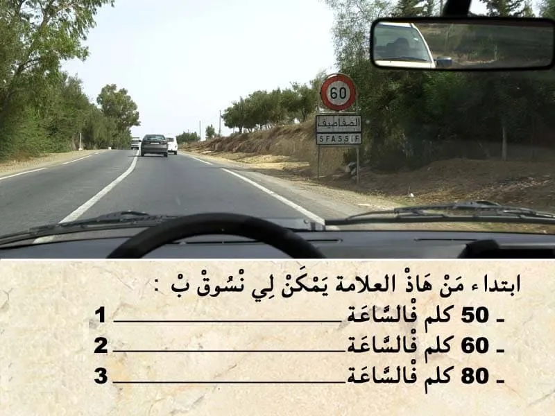
الجواب الصحيح: 1 و 2
هذا العلامة ديال المنع. "تحديد السرعة" كتعلم على انه ممنوع السير بأكثر من 60 كلم في الساعة. ✅ يمكن لي نمشي بسرعة اقل من 60 كلم في الساعة.
السؤال 3
الجواب الصحيح: 2
هذا العلامة ديال الإرشاد. باللون الأصفر. "تشوير مؤقت" - كتعلم على طريق مقطوع على بعد 300 متر . - و حيت عندي علامة 🔵 ديال الاجبار فوسط المسلك و فيها سهم لليسار. كيعني ممنوع عليا نكمل السير للقدام و واجب عليا نغير الإتجاه على ليسر .
السؤال 4
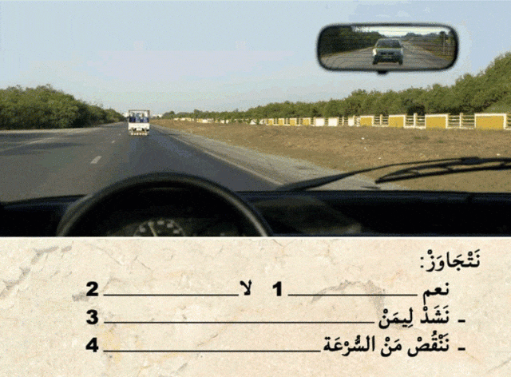
الجواب الصحيح: 2 و 3
قبل التجاوز . واجب عليا نراقب، تم نبه، تم ننحاز. ⛔ في حالة كانت شي عربة🚗 خلفي علمات بلي غادي تجاوز . 🔵 من الواجب عليا : 👇نشد ليمن ديالي ، 👇 نحتفظ بالسرعة ديالي. ⛔و ما يمكنش لي نتجاوز .
السؤال 5
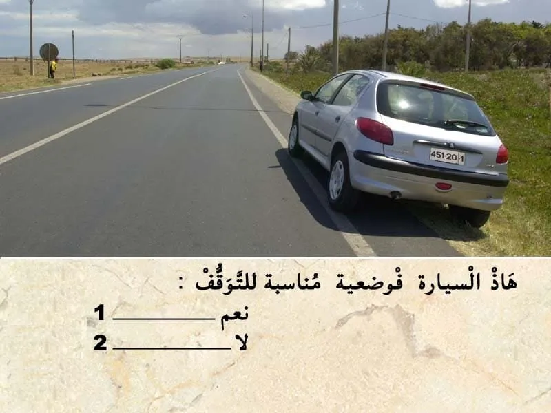
الجواب الصحيح: 2
الخط لي على اقصى اليمين متاصل يعني كيمنع الوقوف و التوقف. في هذا الحالة السيارة في وضعية غير مناسبة للتوقف.
السؤال 6
الجواب الصحيح: 2 و 3
في هذا الحالة. عندي علامة قف . - كتعلم بلي واجب عليا نوقف و نعطي حق الأسبقية للي جاي من ليمن و للي جاي من ليسر. ⛔ ما يمكنش ننقص من السرعة و ندوز . ✅ واجب عليا نوقف . تم نعطي حق الأسبقية في حالة كانت شي سيارة جاية من ليمن او ليسر عاد ندوز .
السؤال 7
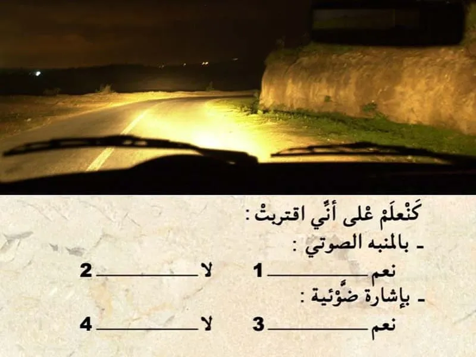
الجواب الصحيح: 2 و 3
في هذا المنعرج باش نعلم بلي قربت يمكن لي نعلم بلي قربت بإشارة ضوئية بأضواء الطريق.
السؤال 8
الجواب الصحيح: 1 و 4
- الضريبة على الحمولة: كتفرض على العربات التي يتجاوز وزنها مع حمولتها 2000 كيلو= 2طن. - الضريبة على المحور: كتفرض على العربات التي يتجاوز وزنها مع حمولتها 3000 كيلو = 3طن
السؤال 9
الجواب الصحيح: 2
الطريق في الغالب كتكون مقصمة لمسالك . في حالة الطريق لي عنده اتجاه وحيد كيكون مسلك للسير العادي و مسلك للتجاوز . و في السير العادي من الواجب عليا نكون في المسلك لي على ليمن ديال الطريق . اما المسلك الثاني يمكن لي نستعملوا فقط للتجاوز.
السؤال 10
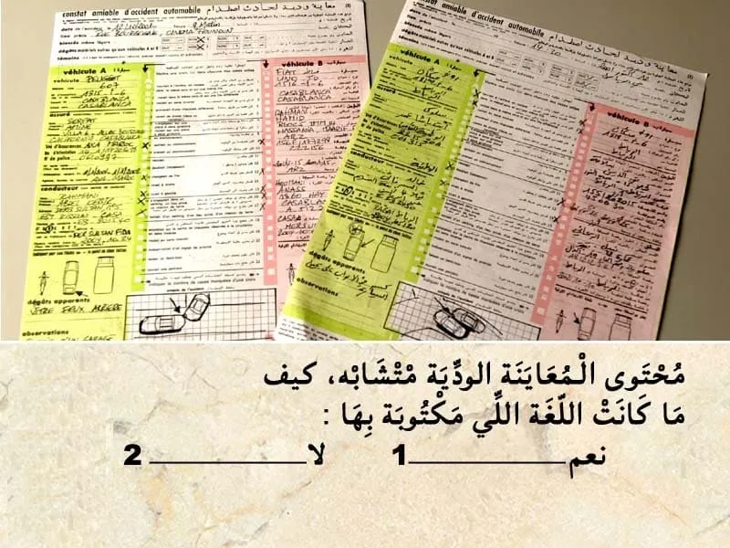
الجواب الصحيح: 1
✍عند وقوع حادثة سير أدت إلى خسائر مادية، يجب على السائق الحفاظ على الهدوء والحرص على ملء المعاينة الودية بعناية. لا تعتبر المعاينة الودية إطلاقا اعترافا بالمسؤولية في حال حدوث أضرار بدنية، تقوم مصالح الأمن الوطني أو الدرك الملكي بإنجاز تقرير يرفق بهذا المحضر.
✍تعبر هذه المعاينة عن الأحداث والحقائق وتستخدم من أجل التعويضات اللازمة وهي ضمان لتسوية سريعة للحوادث لذا ينصح بالاحتفاظ بنموذج فارغ منها في المركبة. ✍يجب على السائق إبلاغ مؤمنه "شركة التأمين" عن الحادثة داخل أجل لا يتجاوز 5 أيام.
✅ يتكون محضر المعاينة الودية من العناصر الأساسية التالية: ✔ تاريخ الحادثة. ✔ المكان بالتحديد. ✔ المصابون حتى بإصابات خفيفة. ✔ الأضرار المادية التي تلحق بغير المركبتين أ و ب. ✔ الأضرار المادية التي تلحق بغير المركبتين أ و ب. ✔ الشهود. ✔ المركبة أ / المركبة ب. ✔ المركبة. ✔ المؤمن عليه. ✔ السائق. ✔ توضيح لنقطة الاصطدام الأصلية. ✔ الأضرار الظاهرة. ✔ الرسم التخطيطي. ✔ الملاحظات. ✔ التوقيعات.
السؤال 11
الجواب الصحيح: 2 و 3
هذا الوضعية ممنوعة . الأطفال من الواجب يركبوا في المقاعد الخلفية للسيارة . في هذا الحالة هذا الراكبة ما رابطاش حزام السلامة. و بالتالي في حالة وقوع اصطدام يمكن لهذا الراكب يترمى للقدام. و يمكن لو يسحق هذا الطفل.
السؤال 12
الجواب الصحيح: 1
🚨🚨 سؤال تم تصحيحه نتيجة للتعديل الاخير في المخالفات. - تجاوز السرعة ب 20 كلم في الساعة كتعتبر مخالفة من الدرجة الثانية و كتعرض السائق لغرامة مالية من 500 حتى ل 1000 درهم . - و ما كتعرض السائق لسحب نقاط من رصيد رخصة السياقة . - 🚨فقط التغيير في عدد النقط المسحوبة. بالنسبة لتجاوز السرعة ب 20 كلم في الساعه . اما الا تجاوزات 20 كيتم سحب 2 ديال النقاط .
السؤال 13
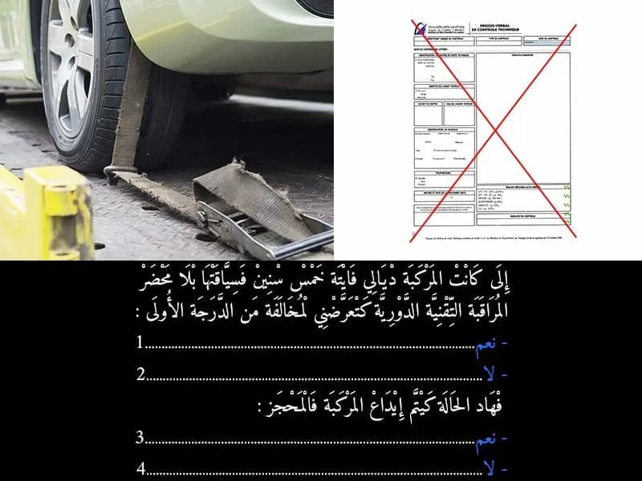
الجواب الصحيح: 1 و 4
في حالة عدم التوفر على شهادة الفحص التقني بالنسبة للمركبات لي تجاوز العمر ديالها 5 سنين . كتعتبر مخالفة الدرجة الأولى . فيها غرامة مالية ديال 700 درهم. - و لا يتم إيداع المركبة في المحجز.و انما يتم الاحتفاظ بيها الى ان يقوم السائق بالادلاء بشهادة تثبث القيام بالفحص التقني. - و يتم الاحتفاظ بشهادة التسجيل . - كما يتم خصم 3 ديال النقط.
السؤال 14
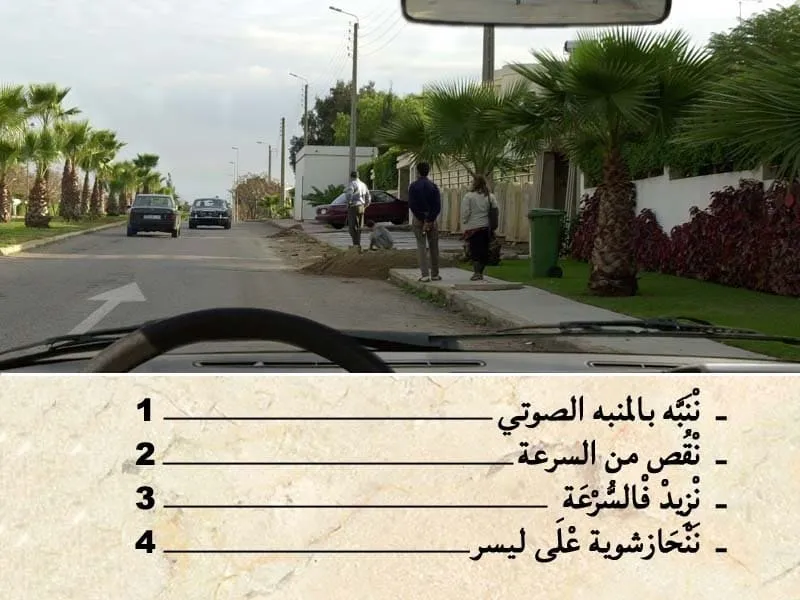
الجواب الصحيح: 2 و 4
في هذا الحالة كاين خطر ديال الراجيلين و الرماة في جنب الطريق. - خاصني نقص من السرعة و ننحاز ليسر .
السؤال 15
الجواب الصحيح: 2
مجموع الأوراق لي من الواجب نتوفر عليها باش نسوق سيارة : - رخصة السياقة. - البطاقة الرمادية. - شهاذة تأمين. - الضريبة السنوية. و في حالة تجاوز العمر ديالها 5 سنين. من الواجب التوفر على : - شهادة الفحص التقني. في هذا الحالة العمر ديال سيارتي 5 و بالتالي كتنقصني ورقة وحدة. " شهادة الفحص التقني".
السؤال 16
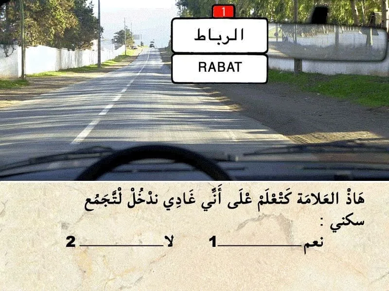
الجواب الصحيح: 1
التشوير الطرقي كيضم علامة ديال الإرشاد. - هذا العلامة فيها الاسم ديال المكان فقط و رقم في الاعلى كيعلم على نوع الطريق . يعني ابتداء من العلامة غادي ندخل لتجمع سكني.
السؤال 17
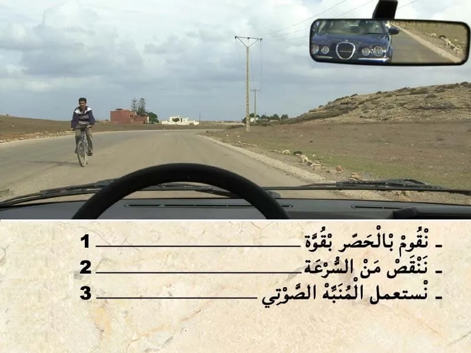
الجواب الصحيح: 2 و 3
في هذا الحالة سائق الدراجة كيشكل خطر . حيت داخل وسط الطريق. ⛔ من المفروض يكون شاد ليمن ديال المسلك ديالوا . ✅ نستعمل المنبه الصوتي باش نبهو. ✅ واجب عليا نقوم بالحصر باش نقص السرعة. ⛔ ما تقومش بالحصر بقوة .
السؤال 18
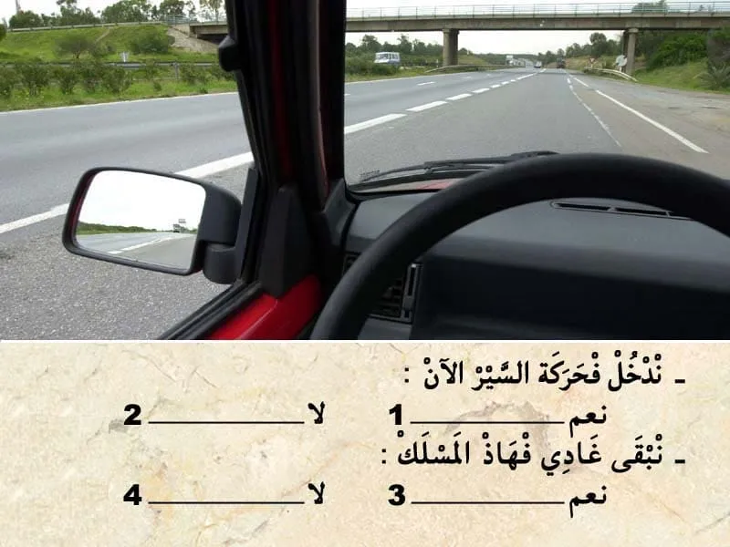
الجواب الصحيح: 2 و 3
في هذا الطريق السيار انا كنسير فمسلك الاندماج و بالتالي واجب عليا نعطي حق الأسبقية للي جاي من ليسر. و نبقى غادي فهاذ المسلك.
السؤال 19
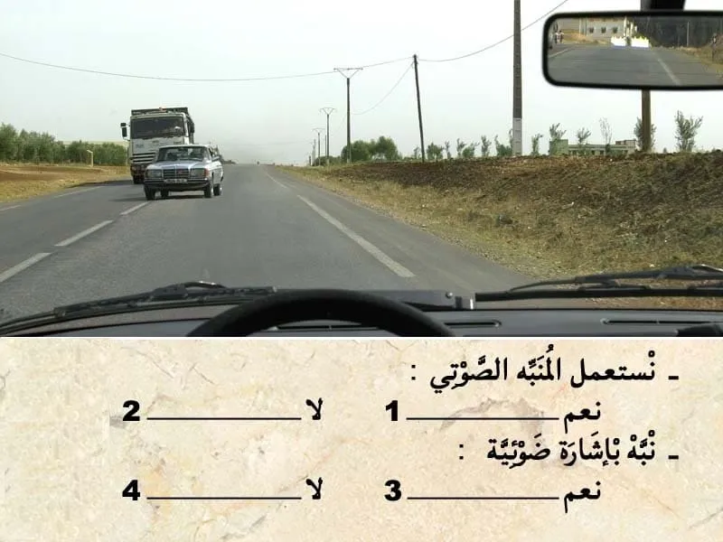
الجواب الصحيح: 2 و 3
هذا مستعمل الطريق تجاوز تجاوز معيب و بالتالي. يمكن لي نبه بإشارة ضوئية باضواء الطريق حيت مقابل معايا.
السؤال 20
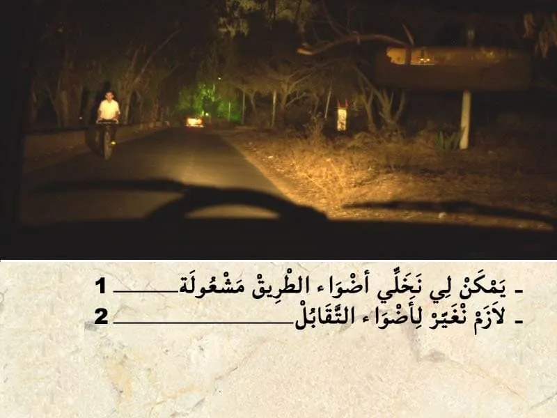
الجواب الصحيح: 2
باش نتقابل مع هذا الراجل من الواجب عليا نغير لأضواء التقابل.
السؤال 21
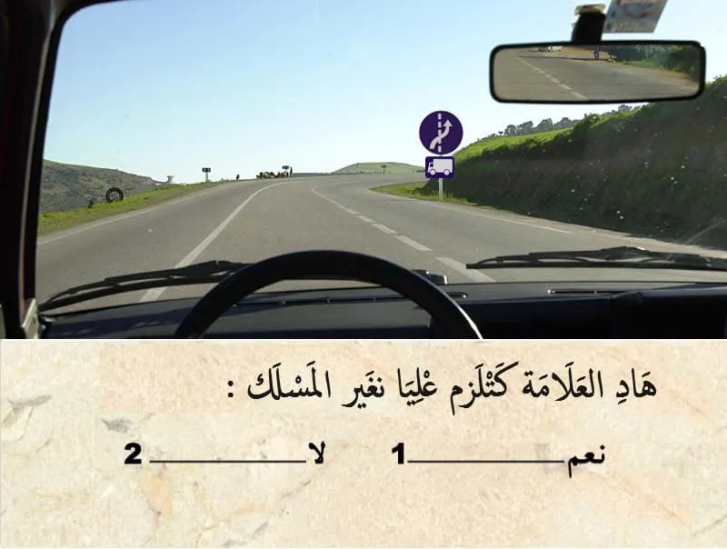
الجواب الصحيح: 2
هذا العلامة ديال الاجبار. كتعلم بلي إجباري على الشاحنات ينحازوا للمسلك لي على ليمن و بالتالي ممنوع عليهم يكملو السير في هذا المسلك . - 💥 العلامة التكميلية كتعلم بلي الاجبار كيخص الشاحنات ، و بالتالي انا غير معني بهذا العلامة .
السؤال 22
الجواب الصحيح: 1
من الواجب مراقبة أضواء السيارة. و نضافتها. و من الواجب تكون معيا مصابيح إحتياطية.
السؤال 23
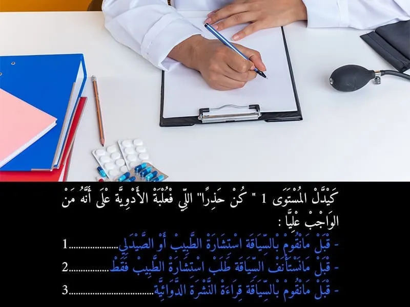
الجواب الصحيح: 3
في علبة الادوية كيدل المستويات على نوع الخط : - كيدل المستوى 1 على انني قبل ما نقوم بالسياقة واجب عليا نقوم بقراءة النشرة الدوائية. - كيدل المستوى 2 على انه قبل ما نقوم بالسياقة من الواجب عليا نستشر مع الطبيب او الصيدلي . باش نعرف واش يمكن لي نسوق الا خديث الدواء ولا لا. - كيدل المستوى 3 على انه قبل ما نستأنف السياقة ,من الواجب عليا نستشر مع الطبيب فقط . باش نعرف واش يمكن لي نسوق الا خديث الدواء ولا لا. يعني المستوى 3 فقط الطبيب هو لي يمكن ليه يعطيك الاذن باش تسوق.
السؤال 24
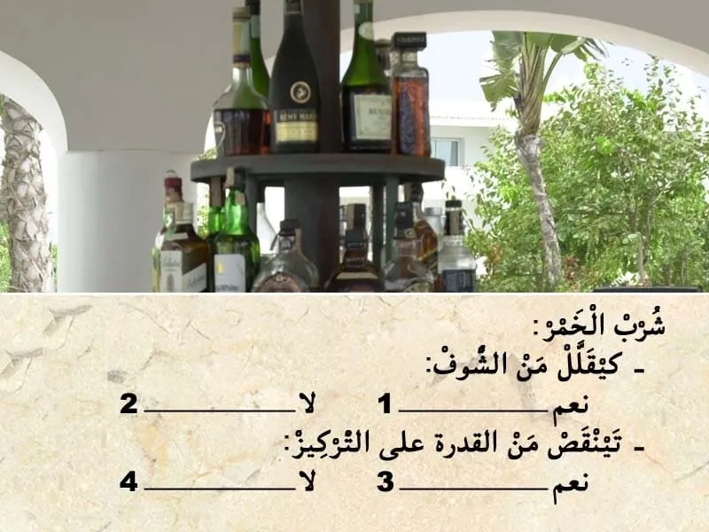
الجواب الصحيح: 1 و 3
شرب الخمر كيقلل من الشوف و تينقص من القدرة على التركيز.
السؤال 25
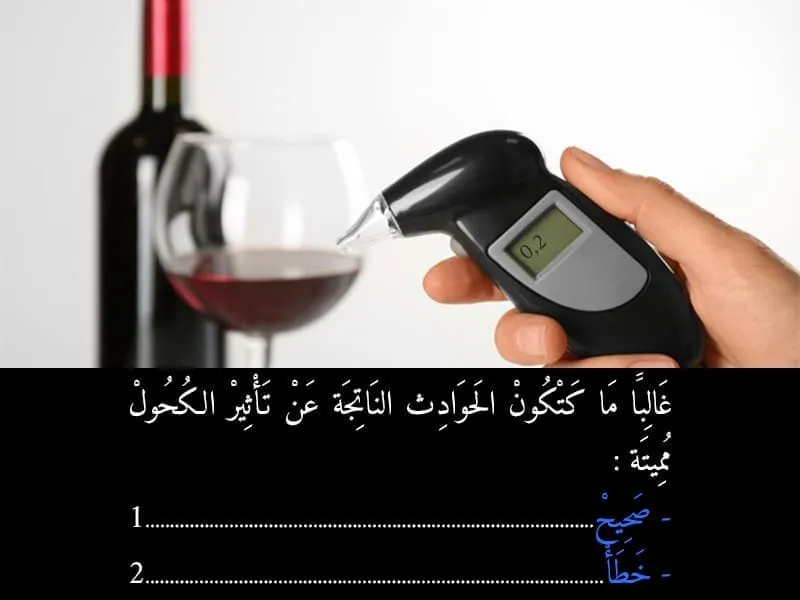
الجواب الصحيح: 1
تعتبر السياقة تحت تأثير الكحول عاملا خطيرا ورئيسيا يتسبب في حوادث السير في جميع أنحاء العالم. ويزيد احتمال وقوع حادثة سير مع ارتفاع مستويات الكحول في الدم، إذ يكون سائق تحت تأثير الكحول أكثر عرضة ب 17 مرة من غيره لأن يتسبب في حادثة سير مميتة. ✍يؤثر الكحول من خلال الدورة الدموية على جميع أعضاء الجسم لا سيما الدماغ، وتكون له عواقب سلبية على الأداء الفكري للسائق، خاصة فيما يخص تقييم المخاطر.